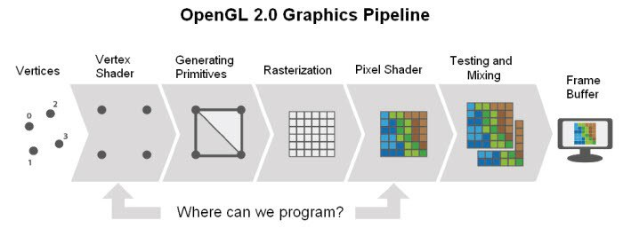
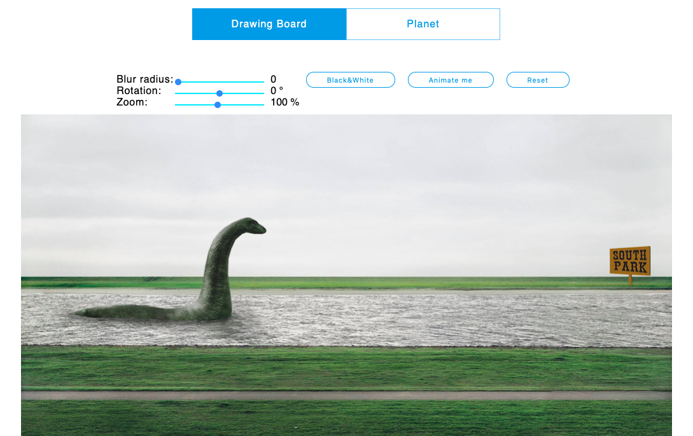
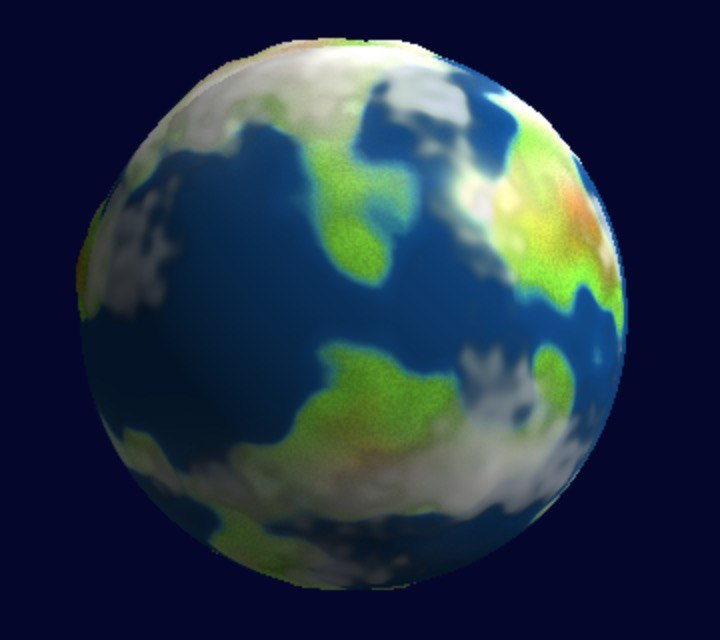
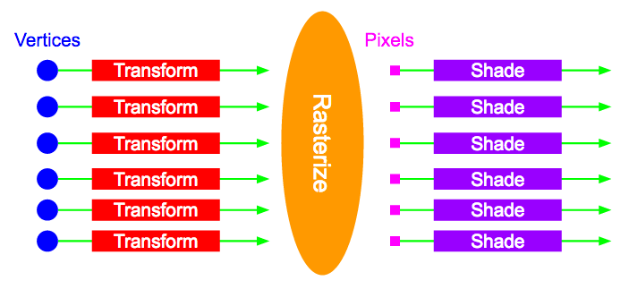

WebGL Planet "Ellen"

Brought to you by Volkova Annie
Что такое WebGL?
— это графическое API, которое позволяет отправлять команды на видеокарту из JavaScript
Khronos Group Members
CPU
vs
GPU
- Устройство видеокарты позволяет выполнять в десятки тысяч раз большее количество задач параллельно.
- В процессоре 8 ядер, а в видеокарту можно представить как процессор с несколькими сотнями.
- На CPU только 2 потока на одном ядре, а на видеокарте около 40 потоков на одном ядре.
Основные шаги
- Геометрия состояшая из треугольников
- Говорим видеокарте, какие преобразования нужно сделать над треугольниками
- И расскрашиваем их
Клиент-серверная модель
- JavaScript code - это клиент
- Видеокарта - это сервер
-
JavaScript code отправляет запросы на видеокарту через интерфес WebGL
- gl.bufferData(...)
- gl.drawElements(...)
Вершинный буффер
const vertices = new Float32Array([
// vertex 1
-0.5, -0.5, 0.0, // position
1.0, 0.0, 0.0, // normal
0.5, 0.5, // texCoord
...
// vertex n
1.0, 0.5, 0.0, // position
0.0, 1.0, 0.0, // normal
1.0, 0.5, // texCoord
]);
Графический pipeline WebGL
- Input Assembler
- Vertex shader
- Primitive Assembly
- Rasterizer
- Fragment Shader
- Output Merger
Вершинный шейдер - (программируемый этап)
- Set gl_Position to tell WebGL the final vertex position

// attribute means it comes from the geometry
// array we created!
attribute vec4 aPosition;
void main() {
gl_Position = aPosition;
}
Растеризация - (непрограммируемый этап)
- GPU figures out which pixels are covered by each triangle
- Interpolates vertex data to pixels along triangle surface

Фрагментный шейдер - (программируемый этап)
- Set gl_FragColor to tell WebGL the final color of a pixel
void main() {
gl_FragColor = vec4(1.0, 0.0, 0.0, 1.0);
}
WebGL 2d
3D

Проекция

Four Ways to Create a Mesh for a Sphere
 Four Ways to Create a Mesh for a Sphere
Four Ways to Create a Mesh for a Sphere
Noise

Освещение
Сглаживание

Выводы
Литература
Спасибо :)
Basic steps on the GPU
- Move vertices around (vertex shader)
- Map triangles to pixels on the screen (rasterization)
- Color the pixels (fragment shader)
- Display the scene
The process
Pipeline Components
We control
- Vertex shader
- Set gl_Position to tell WebGL the final vertex position
// attribute means it comes from the geometry
// array we created!
attribute vec4 aPosition;
void main() {
gl_Position = aPosition;
}
Normalized Device Coordinates
- gl_Position is given in normalized device coordinates
We don't control
-
Rasterization
- GPU figures out which pixels are covered by each triangle
- Interpolates vertex data to pixels along triangle surface
We control
- Fragment shader
- Set gl_FragColor to tell WebGL the final color of a pixel
void main() {
gl_FragColor = vec4(1.0, 0.0, 0.0, 1.0);
}
Let's get started!
What we did
- Shaders
- Programs
- Attributes
- Array buffers
- Varyings
- Uniforms
Shaders
- Vertex shader moves each vertex to its final NDC position
- Fragment shader colors a pixel covered by a triangle
Programs
- Combination of a vertex and a fragment shader
Attributes
- Per vertex data passed to vertex shader
- Includes positions, colors, normals, texture coordinates, etc.
Array buffers
- Storage location on GPU for vertex data
- Data has to be passed from the program into an array buffer
- Array buffer has to be bound to an attribute in the vertex shader
- Pointer must be enabled to tell GPU how to traverse the array
Varyings
- Data passed from vertex to fragment shader
- Output from vertex shader as per-vertex data
- Interpolated across triangle surface in rasterization step
- Interpolated values passed to fragment shader as per-pixel data
Uniforms
- Data passed from program to both vertex shader and fragment shader
- Remains constant for all vertices/pixels of a given object
- E.g. light position, camera position, time
That's pretty much it!
- That pretty much all the API you need to know to draw with WebGL
-
A couple of important ommissions:
- Textures
- Frame buffers